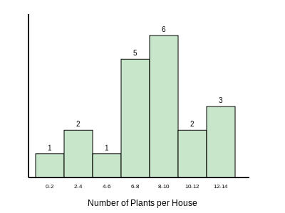
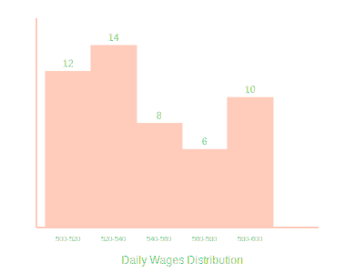
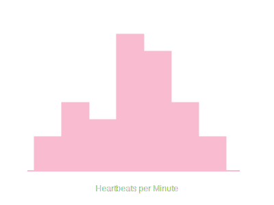
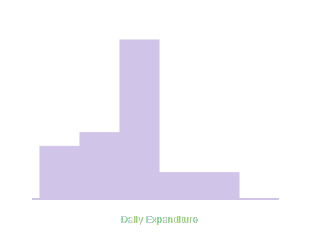
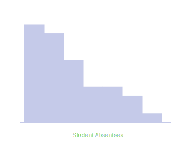
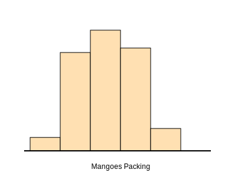

1. A survey was conducted by a group of students... regarding the number of plants in 20
houses... Find the mean number of plants. Which method did you use and why?

We use Direct Method as values of f and x are small.
| Class |
fi |
xi (mid) |
fixi |
| 0-2 |
1 |
1 |
1 |
| 2-4 |
2 |
3 |
6 |
| 4-6 |
1 |
5 |
5 |
| 6-8 |
5 |
7 |
35 |
| 8-10 |
6 |
9 |
54 |
| 10-12 |
2 |
11 |
22 |
| 12-14 |
3 |
13 |
39 |
| Total |
20 |
|
162 |
Mean x̄ = Σfixi / Σfi = 162 / 20 = 8.1.
Mean = 8.1 plants.
2. Consider the following distribution of daily wages of 50 workers... Find the mean daily
wages.

Using Step Deviation Method. Let a = 550, h = 20.
| Class |
fi |
xi |
di=xi-a |
ui=di/h |
fiui |
| 500-520 |
12 |
510 |
-40 |
-2 |
-24 |
| 520-540 |
14 |
530 |
-20 |
-1 |
-14 |
| 540-560 |
8 |
550 |
0 |
0 |
0 |
| 560-580 |
6 |
570 |
20 |
1 |
6 |
| 580-600 |
10 |
590 |
40 |
2 |
20 |
| Total |
50 |
|
|
|
-12 |
Mean x̄ = a + (Σfiui / Σfi) × h
= 550 + (-12/50) × 20
= 550 - 4.8 = 545.2.
Mean Daily Wages = ₹ 545.20.
3. The following distribution shows daily pocket allowance... The mean pocket allowance is
₹ 18. Find the missing frequency f.

Using Direct Method. Mean = 18.
| Class |
fi |
xi |
fixi |
| 11-13 |
7 |
12 |
84 |
| 13-15 |
6 |
14 |
84 |
| 15-17 |
9 |
16 |
144 |
| 17-19 |
13 |
18 |
234 |
| 19-21 |
f |
20 |
20f |
| 21-23 |
5 |
22 |
110 |
| 23-25 |
4 |
24 |
96 |
| Total |
44+f |
|
752+20f |
Mean = Σfixi / Σfi => 18 = (752 + 20f) / (44 + f).
18(44 + f) = 752 + 20f
792 + 18f = 752 + 20f
40 = 2f => f = 20.
Missing frequency f = 20.
4. Thirty women were examined... find the mean heart beats per minute.

Using Step Deviation Method. a = 75.5, h = 3.
| Class |
fi |
xi |
ui |
fiui |
| 65-68 |
2 |
66.5 |
-3 |
-6 |
| 68-71 |
4 |
69.5 |
-2 |
-8 |
| 71-74 |
3 |
72.5 |
-1 |
-3 |
| 74-77 |
8 |
75.5 |
0 |
0 |
| 77-80 |
7 |
78.5 |
1 |
7 |
| 80-83 |
4 |
81.5 |
2 |
8 |
| 83-86 |
2 |
84.5 |
3 |
6 |
| Total |
30 |
|
|
4 |
Mean = 75.5 + (4/30) × 3 = 75.5 + 0.4 = 75.9.
Mean = 75.9 beats/min.
5. In a retail market, fruit vendors were selling mangoes... kept in packing boxes. Find
the mean number of mangoes.

Classes are discontinuous (50-52, 53-55). Make continuous (49.5-52.5). However, for mean, 'xi'
remains same.
Step Deviation. a = 57, h = 3.
| Class |
fi |
xi |
ui |
fiui |
| 50-52 |
15 |
51 |
-2 |
-30 |
| 53-55 |
110 |
54 |
-1 |
-110 |
| 56-58 |
135 |
57 |
0 |
0 |
| 59-61 |
115 |
60 |
1 |
115 |
| 62-64 |
25 |
63 |
2 |
50 |
| Total |
400 |
|
|
25 |
Mean = 57 + (25/400) × 3 = 57 + 0.1875 = 57.19.
Mean = 57.19 mangoes.
6. The table below shows the daily expenditure on food of 25 households... Find the mean
daily expenditure.

Step Deviation. a = 225, h = 50.
| Class |
fi |
xi |
ui |
fiui |
| 100-150 |
4 |
125 |
-2 |
-8 |
| 150-200 |
5 |
175 |
-1 |
-5 |
| 200-250 |
12 |
225 |
0 |
0 |
| 250-300 |
2 |
275 |
1 |
2 |
| 300-350 |
2 |
325 |
2 |
4 |
| Total |
25 |
|
|
-7 |
Mean = 225 + (-7/25) × 50 = 225 - 14 = 211.
Mean = ₹ 211.
7. To find out the concentration of SO2 in the air... find the mean concentration.

Direct Method looks manageable with decimals. Or Step Deviation.
Let's use Direct Method.
| Class |
fi |
xi |
fixi |
| 0.00-0.04 |
4 |
0.02 |
0.08 |
| 0.04-0.08 |
9 |
0.06 |
0.54 |
| 0.08-0.12 |
9 |
0.10 |
0.90 |
| 0.12-0.16 |
2 |
0.14 |
0.28 |
| 0.16-0.20 |
4 |
0.18 |
0.72 |
| 0.20-0.24 |
2 |
0.22 |
0.44 |
| Total |
30 |
|
2.96 |
Mean = 2.96 / 30 = 0.0986... ≈ 0.099 ppm.
Mean = 0.099 ppm.
8. A class teacher has the following absentee record... Find the mean number of days.

Class sizes are unequal (6, 4, 4, 6, 8, 10, 2). Use Direct Method.
| Class |
fi |
xi |
fixi |
| 0-6 |
11 |
3 |
33 |
| 6-10 |
10 |
8 |
80 |
| 10-14 |
7 |
12 |
84 |
| 14-20 |
4 |
17 |
68 |
| 20-28 |
4 |
24 |
96 |
| 28-38 |
3 |
33 |
99 |
| 38-40 |
1 |
39 |
39 |
| Total |
40 |
|
499 |
Mean = 499 / 40 = 12.475.
Mean = 12.48 days.
9. The following table gives the literacy rate... Find the mean literacy rate.

Step Deviation. a = 70, h = 10.
| Class |
fi |
xi |
ui |
fiui |
| 45-55 |
3 |
50 |
-2 |
-6 |
| 55-65 |
10 |
60 |
-1 |
-10 |
| 65-75 |
11 |
70 |
0 |
0 |
| 75-85 |
8 |
80 |
1 |
8 |
| 85-95 |
3 |
90 |
2 |
6 |
| Total |
35 |
|
|
-2 |
Mean = 70 + (-2/35) × 10 = 70 - 0.57 = 69.43.
Mean = 69.43 %.